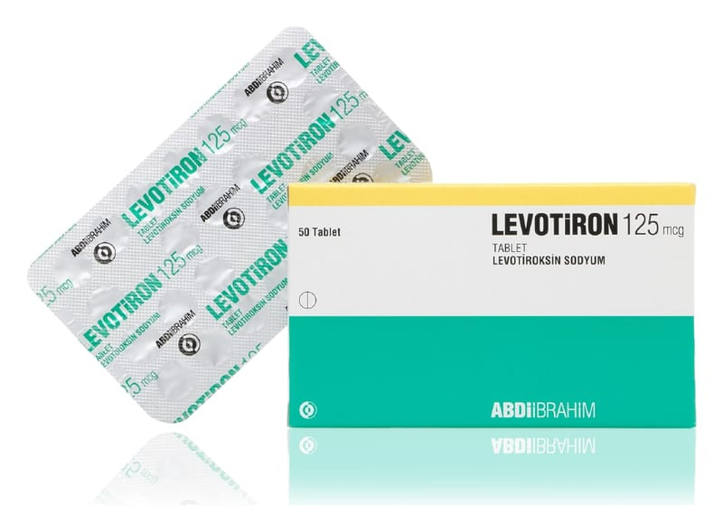

Levotiron 125 mcg Tablet ,50 Tablet

Ne için kullanılır
KT · Bölüm 1Bir yüzünde “+” şeklinde çentik bulunan diğer yüzü “125” baskılı, yuvarlak, beyaz tabletler 125 mcg levotiroksin sodyum içerir, 50 ve 100 tabletlik blister ambalajlarda piyasaya sunulmuştur.
LEVOTİRON’un içeriğinde bulunan levotiroksin etken maddesi, tiroid bezinin hastalıklarında ve işlev bozukluklarının tedavisinde kullanılan sentetik bir tiroid hormonudur. Etkisi tiroid tarafından salgılanan doğal hormonlar ile aynıdır.
LEVOTİRON; - normal tiroid fonksiyonu olan hastalarda iyi huylu guatrı tedavi etmek için, - cerrahi sonrasında guatrın nüksetmesini önlemek için, - tiroid bezi yeteri kadar çalışmadığında, doğal tiroid hormonlarının işlevini yerine getirmek için ve - tiroid kanseri olan hastalarda tümörün büyümesini baskılamak için kullanılır.
LEVOTİRON; 25 mikrogram, 50 mikrogram, 75 mikrogram ve 100 mikrogram dozları ayrıca hormonların aşırı düzeyde üretimi antitiroid ilaçlarla tedavi edildiğinde, tiroid hormon düzeylerini dengelemek amacıyla da kullanılır.